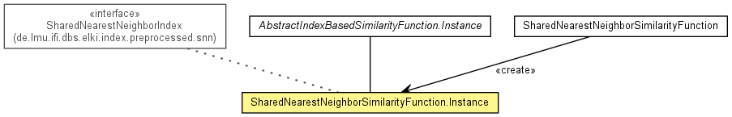

de.lmu.ifi.dbs.elki.distance.similarityfunction
Class SharedNearestNeighborSimilarityFunction.Instance<O>
java.lang.Object
 de.lmu.ifi.dbs.elki.database.query.AbstractDataBasedQuery<O>
de.lmu.ifi.dbs.elki.database.query.similarity.AbstractSimilarityQuery<O,D>
de.lmu.ifi.dbs.elki.database.query.similarity.AbstractDBIDSimilarityQuery<O,D>
de.lmu.ifi.dbs.elki.distance.similarityfunction.AbstractIndexBasedSimilarityFunction.Instance<O,SharedNearestNeighborIndex<O>,SetDBIDs,IntegerDistance>
de.lmu.ifi.dbs.elki.distance.similarityfunction.SharedNearestNeighborSimilarityFunction.Instance<O>
de.lmu.ifi.dbs.elki.database.query.AbstractDataBasedQuery<O>
de.lmu.ifi.dbs.elki.database.query.similarity.AbstractSimilarityQuery<O,D>
de.lmu.ifi.dbs.elki.database.query.similarity.AbstractDBIDSimilarityQuery<O,D>
de.lmu.ifi.dbs.elki.distance.similarityfunction.AbstractIndexBasedSimilarityFunction.Instance<O,SharedNearestNeighborIndex<O>,SetDBIDs,IntegerDistance>
de.lmu.ifi.dbs.elki.distance.similarityfunction.SharedNearestNeighborSimilarityFunction.Instance<O>
- Type Parameters:
O - Object type
- All Implemented Interfaces:
- DatabaseQuery, SimilarityQuery<O,IntegerDistance>, IndexBasedSimilarityFunction.Instance<O,SharedNearestNeighborIndex<O>,IntegerDistance>
- Enclosing class:
- SharedNearestNeighborSimilarityFunction<O>
public static class SharedNearestNeighborSimilarityFunction.Instance<O>
- extends AbstractIndexBasedSimilarityFunction.Instance<O,SharedNearestNeighborIndex<O>,SetDBIDs,IntegerDistance>

Instance for a particular database.
| Methods inherited from class java.lang.Object |
clone, equals, finalize, getClass, hashCode, notify, notifyAll, toString, wait, wait, wait |
SharedNearestNeighborSimilarityFunction.Instance
public SharedNearestNeighborSimilarityFunction.Instance(Relation<O> database,
SharedNearestNeighborIndex<O> preprocessor)
- Constructor.
- Parameters:
database - Databasepreprocessor - Index
similarity
public IntegerDistance similarity(DBID id1,
DBID id2)
- Description copied from class:
AbstractSimilarityQuery
- Returns the distance between the two objects specified by their object ids.
- Specified by:
similarity in interface SimilarityQuery<O,IntegerDistance>- Specified by:
similarity in class AbstractSimilarityQuery<O,IntegerDistance>
- Parameters:
id1 - first object idid2 - second object id
- Returns:
- the distance between the two objects specified by their object ids
getDistanceFactory
public IntegerDistance getDistanceFactory()
- Description copied from interface:
SimilarityQuery
- Method to get the distance functions factory.
- Returns:
- Factory for distance objects